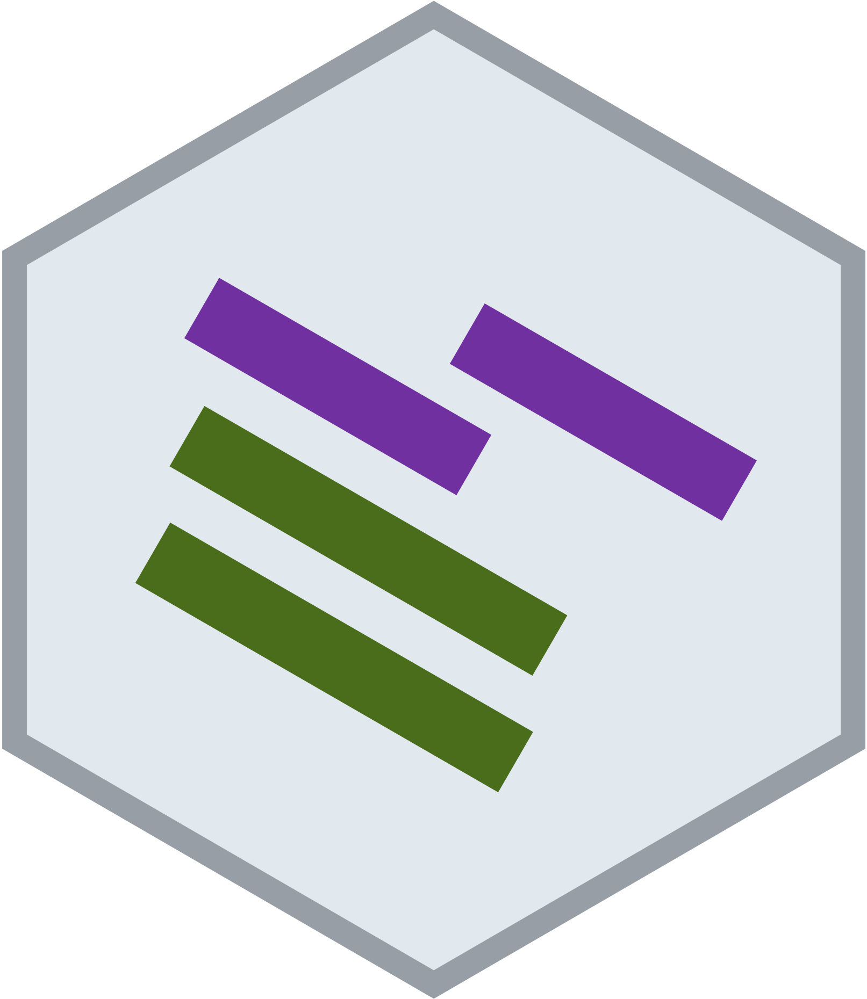

Skip to contents
SelectSim
0.1.6
Get started
Reference
Articles
Introduction to SelectSim
Data Processing with SelectSim
Changelog

NA
Source:
.github/PULL_REQUEST_TEMPLATE.md
Summary
Changes
Test plan
devtools::document()
run to regenerate NAMESPACE / man pages
devtools::check()
passes with 0 errors, 0 warnings, 0 notes
New or changed behaviour covered by tests in
tests/testthat/
Documentation updated (roxygen tags, vignette, README) if applicable